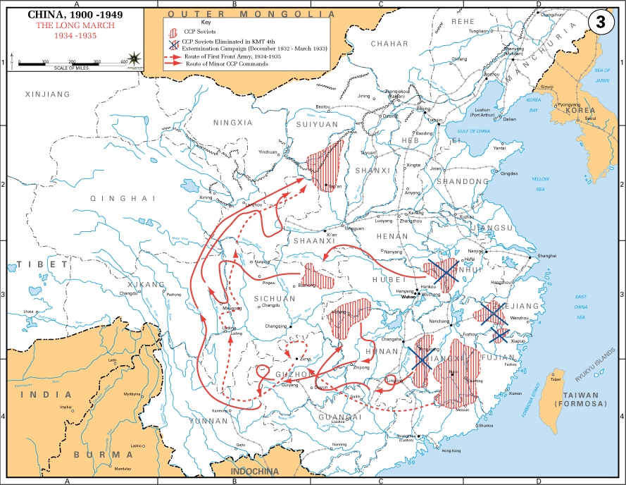

★ ★ ★ ★ ★
红军长征
伟大的战略转移 · 二万五千里 · 1934—1936
二万五千里
行军总里程
1 年
中央红军历时
11 省
跨越省份
40+ 座
翻越高山
近百条
跨越江河
江 西
湖 南
广 西
贵 州
云 南
四 川
甘 肃
陕 西

📷 长征路线历史地图(美国陆军绘制,公有领域)
🔊 语音讲解
🕰 长征历程
▶ 自动播放
🎖 长征足迹 · 勋章收集
📜 长征大事记
🧠 长征知识问答
答完 10 道题,看看你能得多少分
“
长征是宣言书，长征是宣传队，长征是播种机。
”
每一代人都有每一代人的长征路，每一代人都要走好自己的长征路。